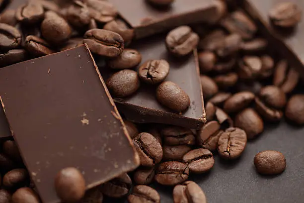

Un abrazo en una taza
El café mocaccino, a menudo llamado simplemente moca, es una variante del café con leche que se ha ganado el corazón de quienes buscan el equilibrio perfecto. A diferencia de un latte tradicional, el mocaccino incorpora un elemento mágico: el chocolate.
Esta bebida es ideal para los días fríos o para esos momentos en los que necesitas un pequeño empujón de energía acompañado de un toque dulce y reconfortante.
El equilibrio perfecto
La clave de un buen mocaccino radica en la proporción. La fuerza y la acidez del espresso deben ser contrarrestadas, pero no eclipsadas, por la suavidad de la leche texturizada y la riqueza del cacao. Ya sea que se utilice jarabe de chocolate oscuro, cacao en polvo o chocolate con leche derretido, el resultado final debe ser una experiencia sedosa en el paladar.
